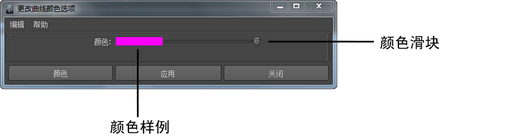

- 许多菜单项的显示和行为与场景视图中的主“编辑”(Edit)菜单类似。但是，由于“曲线图编辑器”(Graph Editor)直接使用动画曲线和属性，因此设置窗口内没有任何可用于编辑操作的层级选项。
- 这些设置类似于“摄影表编辑器”(Dope Sheet Editor)的“编辑”(Edit)菜单设置。
- 撤消/重做(Undo/Redo)
-
“撤消”(Undo)会取消上一个操作。“重做”(Redo)会重做上次撤消的操作。
- 剪切(Cut)
-
“剪切”(Cut)可从选定属性中移除现有关键帧，并将该信息的副本放置在剪贴板中。如果在图表视图中选择了曲线分段，则在选择“编辑 > 剪切”(Edit > Cut)后将移除该区域。如果未选择任何曲线分段，则“剪切”(Cut)将对您在“曲线图编辑器”(Graph Editor)的“大纲视图”(Outliner)部分中选择的项目进行操作。另请参见“关键帧”(Key)菜单中的“剪切”(Cut)。
选择 >
 ，查看有关“曲线图编辑器”(Graph Editor)的“剪切关键帧”(Cut Keys)选项的信息。
，查看有关“曲线图编辑器”(Graph Editor)的“剪切关键帧”(Cut Keys)选项的信息。
- 复制(Copy)
-
“复制”(Copy)可复制选定属性中的现有关键帧，并将该信息放置在关键帧剪贴板中。如果在图表视图中选择了曲线分段，该区域将在选择“编辑 > 复制”(Edit > Copy)后移除。如果未选择任何曲线分段，则“复制”(Copy)将对您在“曲线图编辑器”(Graph Editor)的“大纲视图”(Outliner)部分中选择的项目进行操作。
选择 >
，查看有关“复制关键帧”(Copy Keys)选项的信息。
有关示例，另请参见在曲线图编辑器中复制和粘贴关键帧。
- 粘贴(Paste)
-
“粘贴”(Paste)可将剪贴板中的关键帧添加到属性。已粘贴的关键帧可与现有关键帧合并、一次性插入（置换现有关键帧）或用来一次性替换关键帧。
选择 >
，查看有关“粘贴关键帧”(Paste Keys)选项的信息。
有关示例，请参见在曲线图编辑器中复制和粘贴关键帧。
- 删除(Delete)
-
“删除”(Delete)可移除属性中的现有关键帧。“删除”(Delete)的工作方式与“剪切”(Cut)基本相同，只是不会将已移除关键帧的副本放置在关键帧剪贴板中。另请参见“关键帧”(Key)菜单中的“删除”(Delete)。
选择 >
，查看有关“删除关键帧”(Delete Keys)选项的信息。
- 缩放(Scale)
-
“缩放”(Scale)可扩大或缩小关键帧和曲线分段的选定范围，以适配指定的时间范围。如果已在“曲线图编辑器”(Graph Editor)大纲视图中选择通道，且未选择曲线分段，则“缩放”(Scale)将调整选定通道的所有关键帧。此外，当“仅缩放指定关键帧”(Only Scale Specified Keys) 选项处于启用状态时，还可以缩放“曲线图编辑器”(Graph Editor)的选定区域中的关键帧。
在“缩放”(Scale)和“枢轴”(Pivot)字段中，第一个字段是倍数，第二个字段是缩放的枢轴点。
选择“编辑 > 缩放”(Edit > Scale) >
，查看有关“缩放关键帧”(Scale Keys)选项的信息。
注： “编辑 > 缩放”(Edit > Scale)选项与中的缩放设置不同，因为您可以使用倍数来缩放关键帧。在缩放关键帧选项(Scale Keys options)的“缩放”(Scale)/“枢轴”(Pivot)字段中，第一个字段是倍数，第二个字段是缩放的枢轴点。使用，您可以手动调整选定关键帧的大小，而不是以数学计算方式调整。
- 变换工具(Transformation Tools)
-
可以打开以下工具来修改关键帧：
- 移动关键帧选项(Move Keys options)：操纵关键帧组
- 缩放关键帧工具(Scale Keys Tool)：缩放动画曲线分段的区域
- 晶格变形关键帧工具(Lattice Deform Keys Tool)：针对关键帧使用晶格变形器来一次操纵多个关键帧
- 区域关键帧工具(Region Keys Tool)：在可以拉伸和调整大小的关键帧上拖选区域
- 重定时工具(Retime Tool)：调整动画序列中关键帧移动的计时
- 雕刻工具(Sculpting Tools)：在关键帧上“绘制”变换
- 捕捉(Snap)
-
“捕捉”(Snap)将使选定关键帧在时间上捕捉到最近的整数时间单位值或属性值。使用“选择未捕捉对象”(Select Unsnapped)来检查未在整个时间单位内的关键帧。默认为捕捉到最近的时间单位。
选择“编辑 > 捕捉关键帧”(Edit > Snap Keys) >
 ，查看捕捉关键帧选项(Snap Keys options)并编辑相应设置。
，查看捕捉关键帧选项(Snap Keys options)并编辑相应设置。
- 选择未捕捉对象(Select Unsnapped)
-
如果选择的对象或属性均位于整数时间单位中，则从选定通道中选择所有关键帧，或者选择图表视图中的任何关键帧。
- 移除未捕捉对象(Remove Unsnapped)
-
删除“移除未捕捉关键帧选项”(Remove Unsnapped Keys Options)中指定范围内的所有未捕捉关键帧（即，不在整个帧上的关键帧）。
选择 >
以查看“移除未捕捉关键帧选项”(Remove Unsnapped Keys Options)并编辑设置。
- 选择曲线节点(Select Curve Nodes)
-
仅将选定动画曲线的节点加载到“曲线图编辑器”(Graph Editor)，并卸载所有其他对象和动画曲线。例如，如果为角色的 rightWrist 关节选择 translateX 和 translateY 曲线，且稍后选择该菜单项，则“曲线图编辑器”(Graph Editor)中仅会出现以下节点：rightWrist_translateX 和 rightWrist_translateY。
- 更改曲线颜色(Change Curve Color)
-
将图表视图中选择的曲线颜色更改为您在“更改曲线颜色选项”(Change Curve Color Options)窗口中指定的自定义颜色。
选择 >
，查看有关更改曲线颜色选项(Change Curve Color Options)的信息。
- 更改曲线颜色(Change Curve Color) >
-
打开“更改曲线颜色选项”(Change Curve Color Options)窗口。在该窗口中，可以为在图表视图中选择的动画曲线创建自定义曲线颜色。
此外，还可以从“属性编辑器”(Attribute Editor)中或通过 MEL 为动画曲线创建自定义曲线颜色。请参见通过“属性编辑器”(Attribute Editor)或使用 MEL 来更改动画曲线颜色
您可以在“颜色”(Colors)设置“曲线图编辑器”(Graph Editor)区域中的“曲线图编辑器”(Graph Editor)内更改项目的默认颜色。
- “颜色样例”(Color Swatch)和“颜色滑块”(Color Slider)
-
单击“颜色样例”(Color Swatch)可启动“Maya 颜色选择器”(Maya Color Chooser)。使用“Maya 颜色选择器”(Maya Color Chooser)，可以为曲线选择新的自定义颜色。
拖动“颜色滑块”(Color Slider)可增加或减少“颜色样例”(Color Swatch)表示的颜色值。
- 颜色(Color)
-
将当前的样例颜色应用于图表视图中选定的动画曲线，并关闭“更改曲线颜色选项”(Change Curve Color Options)窗口。
- 应用(Apply)
-
将当前的样例颜色应用于图表视图中选定的动画曲线。“更改曲线颜色选项”(Change Curve Color Options)窗口将保持打开。
- 关闭(Close)
-
取消“更改曲线颜色”(Change Curve Color)操作，并关闭“更改曲线颜色选项”(Change Curve Color Options)窗口。
- 移除曲线颜色(Remove Curve Color)
-
移除图表视图的选定动画曲线中的自定义曲线颜色，并将其返回为默认颜色。
- 设置曲线颜色(Set Curve Colors)
-
打开“曲线颜色”(Curve Colors)窗口，以便可以设置自定义曲线颜色方案，从而使曲线颜色与属性名称相关联。请参见将曲线颜色与属性名称相关联。
- 场景时间扭曲(Scene Time Warp)
-
此项目也会出现在主菜单栏中。请参见“场景时间扭曲”(Scene Time Warp)菜单。
- 首选项(Preferences)
- 打开“动画”(Animation)首选项（在“设置”(Settings)下），从中可以自定义“曲线图编辑器”(Graph Editor)部分中的设置。